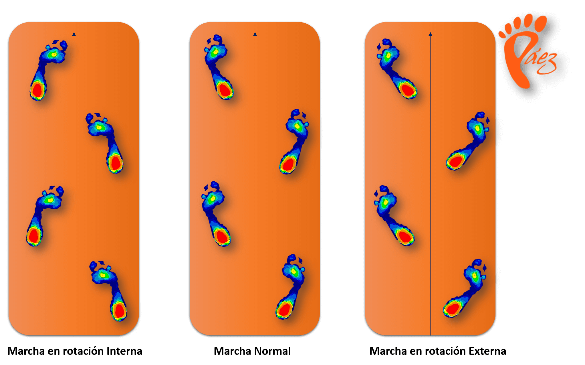

Al día realizamos entre 8000 y 10000 pasos. Cada paso ocasiona un impacto a las articulaciones, siendo este impacto superior al peso de la persona y al final del día la suma de estos impactos puede provocar la aparición de dolores en pies, rodilla, cadera o espalda, sobre todo si existe alteraciones en la marcha y esta no se realiza de forma adecuada.

En estas ocasiones es recomendable realizar un estudio de la pisada que puede revelar el origen de estos dolores y descubrir qué tipo de pisada tienes.
El estudio de la pisada es un análisis de la posición del pie y su relación con otras estructuras del cuerpo como rodilla, cadera y espalda. Con un correcto estudio de la pisada podemos diagnosticar, tratar y prevenir todos aquellos problemas relacionados con una incorrecta forma de caminar.
En Clínica Podológica Páez disponemos de un equipo altamente cualificado y de las últimas tecnologías para el análisis de la pisada tanto en estática con la Plataforma Digital Podobit, foto 4 como en dinámica con el Sistema Análisis Optogait
Para el tratamiento y la prevención de estos problemas de la pisada, en Clínica Podológica Páez disponemos de un amplio abanico de posibilidades de tratamiento, según el diagnóstico y patología: Terapia Laser, Soportes Plantares, Calzadoterapia, Posturología, Vendajes Funcionales y Neuromusculares, e Infiltraciones Ecoguiadas.